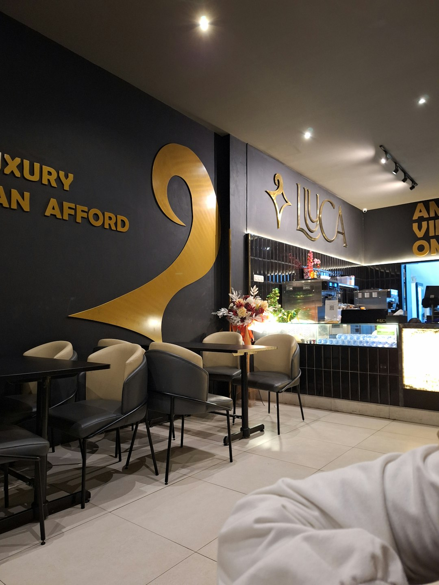

Az Édes Álmok története 2018-ban kezdődött, amikor egy kis családi álom valósággá vált. Azóta minden nap azzal a küldetéssel kelünk fel, hogy a legfinomabb fagylaltokat készítsük neked.
Történetünk
Minden kezdet nehéz, de mi mindig hittünk abban, hogy a minőség és a szenvedély meghozza gyümölcsét. Kis fagylaltozónk egy álomból nőtte ki magát, ahol a hagyományos kézműves technikák találkoznak a modern ízvilággal.
Büszkék vagyunk arra, hogy minden fagylaltunkat frissen, kézzel készítjük. Nem használunk mesterséges színezékeket vagy ízfokozókat, csak a természet legfinomabb ajándékait.
Ma már nemcsak egy fagylaltozó vagyunk, hanem egy közösség, ahol az emberek összeülnek, nevetnek és élvezik az élet apró örömeit egy-egy finom gombóc társaságában.
Természetes alapanyagok
Csak természetes, adalékanyag-mentes összetevőket használunk.
Családi hangulat
Mindenkit szeretettel fogadunk, legyen szó egy gyermekről vagy nagyszülőről.
Kiváló minőség
Minden fagylaltunk prémium minőségű, amit büszkén állítunk elő.
Környezettudatosság
Fenntartható csomagolást használunk és helyi beszállítókkal dolgozunk.
Kovács Anna
Alapító & Fő cukrász
20 éves tapasztalattal a cukrászatban, Anna álma volt egy olyan hely megteremtése, ahol a hagyományos receptek találkoznak a modern ízekkel.
Nagy Péter
Fagylalt mester
Olaszországban tanulta a fagylaltkészítés művészetét. Péter különleges kreativitással készíti a szezonális és limitált kiadású ízeket.
Szabó Mária
Minőségbiztosítási vezető
Gondoskodik arról, hogy minden gombóc megfeleljen a legmagasabb minőségi követelményeknek és a biztonsági előírásoknak.
2018 - Az Édes Álmok fagylaltozó megnyitása
2019 - Első helyezés a helyi fagylalt versenyen
2020 - Online rendelési rendszer bevezetése
2021 - Új, különleges ízek fejlesztése
2022 - Második üzlet megnyitása
2023 - Eco-friendly csomagolás bevezetése
2024 - 10+ új íz és kiegészítő bevezetése
Ha te is szereted a minőségi fagylaltokat és a barátságos hangulatot, várunk szeretettel üzletünkben vagy online rendelőrendszerünkben!
🍦❤️